第 18 章 探索性数据分析7
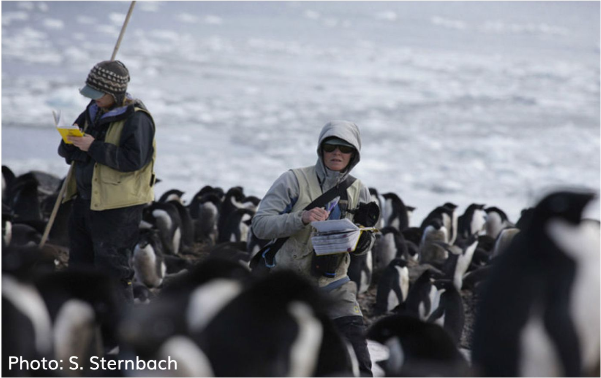
18.1 数据
18.1.1 导入数据
可通过宏包palmerpenguins::penguins获取数据，也可以读取本地penguins.csv文件，
我们采取后面一种方法：
library(tidyverse)
penguins <- read_csv("./demo_data/penguins.csv") %>%
janitor::clean_names()
penguins %>%
head()18.1.2 变量含义
| variable | class | description |
|---|---|---|
| species | integer | 企鹅种类 (Adelie, Gentoo, Chinstrap) |
| island | integer | 所在岛屿 (Biscoe, Dream, Torgersen) |
| bill_length_mm | double | 嘴峰长度 (单位毫米) |
| bill_depth_mm | double | 嘴峰深度 (单位毫米) |
| flipper_length_mm | integer | 鰭肢长度 (单位毫米) |
| body_mass_g | integer | 体重 (单位克) |
| sex | integer | 性别 |
| year | integer | 记录年份 |
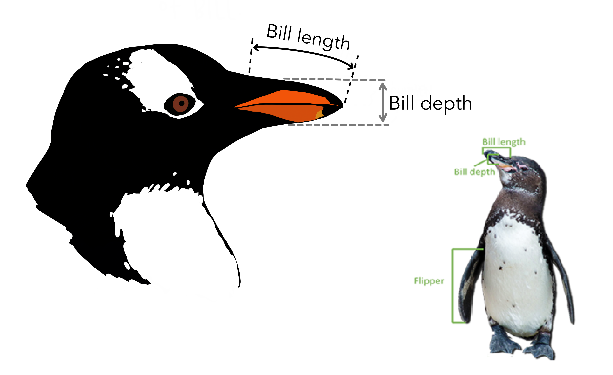
18.2 探索性分析
大家可以提出自己想探索的内容
18.2.2 每种类型企鹅各种属性的均值和分布
penguins %>%
ggplot(aes(x = bill_length_mm)) +
geom_histogram(aes(fill = sex)) +
facet_wrap(vars(species), scales = "free")
来张更好看点的
penguins %>%
ggplot(aes(x = bill_length_mm, fill = sex)) +
geom_histogram(
position = "identity",
alpha = 0.7,
bins = 25
) +
scale_fill_manual(values = c("#66b3ff", "#8c8c8c")) +
ylab("number of penguins") +
xlab("length (mm)") +
theme_minimal() +
theme(
legend.position = "bottom",
legend.text = element_text(size = 11),
legend.title = element_blank(),
panel.grid.minor = element_blank(),
axis.title = element_text(color = "white", size = 10),
plot.title = element_text(size = 20),
plot.subtitle = element_text(size = 12, hjust = 1)
) +
facet_wrap(vars(species), scales = "free") 同理可以画出其他属性的分布
同理可以画出其他属性的分布

我更喜欢这样，方便比较均值
library(ggridges)
penguins %>%
ggplot(aes(x = bill_length_mm, y = species, fill = species)) +
ggridges::geom_density_ridges()
同理，我们可以画出嘴峰深度的分布
penguins %>%
ggplot(aes(x = bill_depth_mm, fill = species)) +
ggridges::geom_density_ridges(aes(y = species))
penguins %>%
ggplot(aes(x = bill_depth_mm, fill = sex)) +
ggridges::geom_density_ridges(aes(y = species))
penguins %>%
ggplot(aes(x = body_mass_g, y = species, fill = sex)) +
ggridges::geom_density_ridges(alpha = 0.5)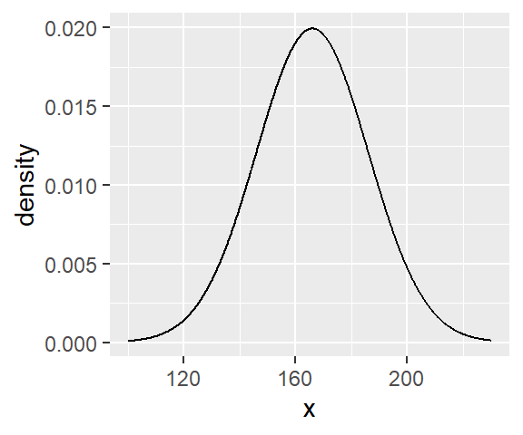
但，这样一个变量一个变量的画，可能会比较麻烦。于是我们可以这样
penguins %>%
select(species, bill_length_mm:body_mass_g) %>%
pivot_longer(-species, names_to = "measurement", values_to = "value") %>%
ggplot(aes(x = value)) +
geom_density(aes(color = species, fill = species), size = 1.2, alpha = 0.2) +
facet_wrap(vars(measurement), ncol = 2, scales = "free")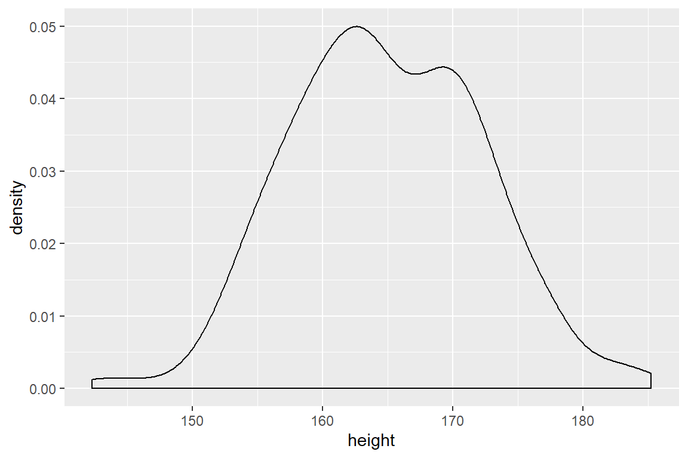
penguins %>%
select(species, bill_length_mm:body_mass_g) %>%
pivot_longer(-species, names_to = "measurement", values_to = "value") %>%
ggplot(aes(x = species, y = value)) +
geom_boxplot(aes(color = species, fill = species), size = 1.2, alpha = 0.2) +
facet_wrap(vars(measurement), ncol = 2, scales = "free")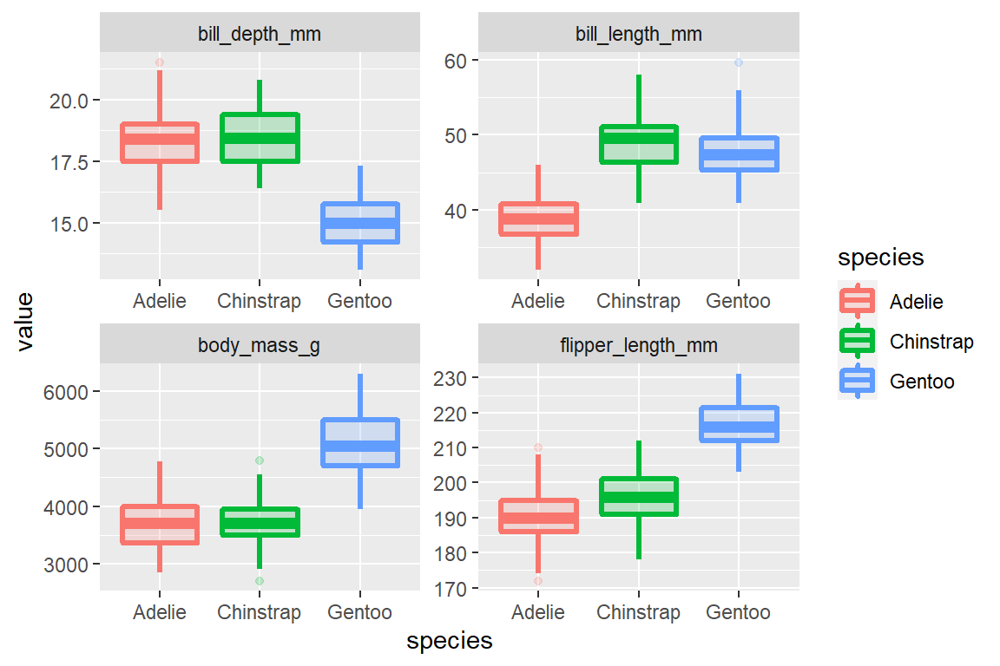
penguins %>%
select(species, bill_length_mm:body_mass_g) %>%
pivot_longer(-species, names_to = "measurement", values_to = "value") %>%
ggplot(aes(x = value, y = species, fill = species) ) +
ggridges::geom_density_ridges() +
facet_wrap(vars(measurement), scales = "free")
18.2.3 嘴峰长度和深度的关联
penguins %>%
ggplot(aes(
x = bill_length_mm, y = bill_depth_mm,
shape = species, color = species
)) +
geom_point()
penguins %>%
ggplot(aes(
x = bill_length_mm, y = bill_depth_mm,
shape = species, color = species
)) +
geom_point(aes(size = body_mass_g))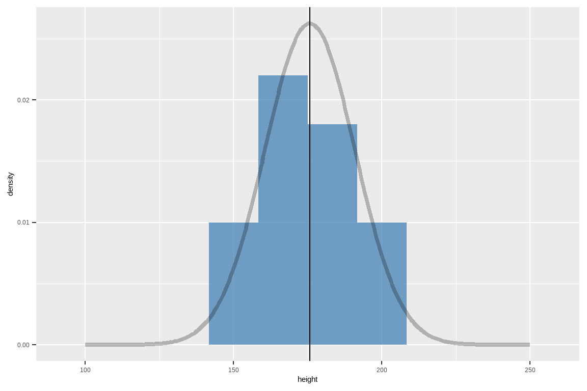
感觉这是一个辛普森佯谬， 我们画图看看
penguins %>%
ggplot(aes(x = bill_length_mm, y = bill_depth_mm)) +
geom_point(aes(color = species, shape = species)) +
geom_smooth(method = lm) +
geom_smooth(method = lm, aes(color = species))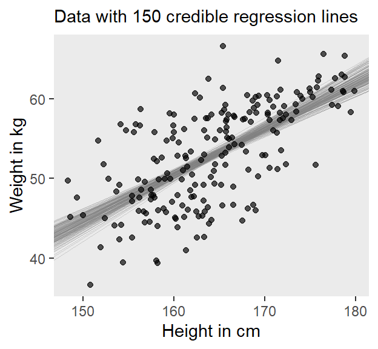
18.2.4 体重与翅膀长度的关联
penguins %>%
group_by(species, island, sex) %>%
ggplot(aes(
x = body_mass_g, y = reorder(species, -body_mass_g),
color = species
)) +
geom_jitter(position = position_jitter(seed = 2020, width = 0.2), alpha = 0.4, size = 2) +
stat_summary(fun = mean, geom = "point", size = 5, alpha = 1)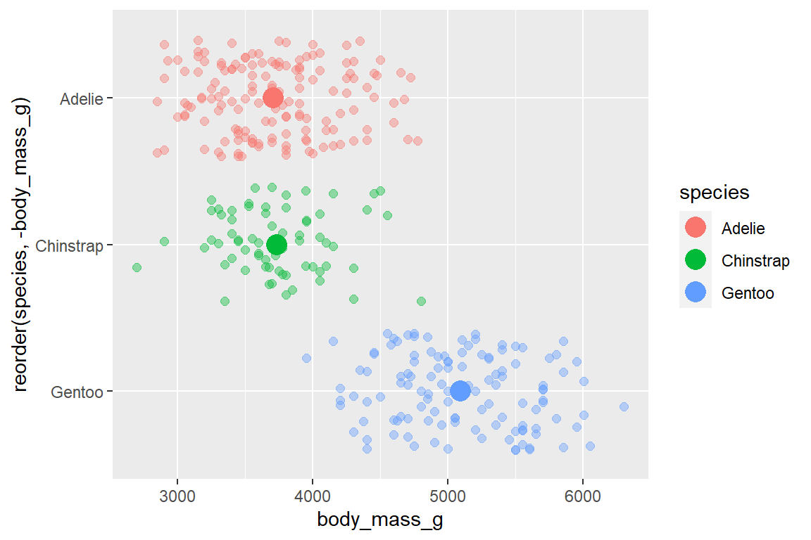
library(ggtext)
penguins %>%
ggplot(aes(flipper_length_mm, body_mass_g, group = species)) +
geom_point(aes(colour = species, shape = species), alpha = 0.7) +
scale_color_manual(values = c("darkorange", "purple", "cyan4")) +
labs(
title = "Penguin Size, Palmer Station LTER",
subtitle = "Flipper length and body mass for <span style = 'color:darkorange;'>Adelie</span>, <span style = 'color:purple;'>Chinstrap</span> and <span style = 'color:cyan4;'>Gentoo</span> Penguins",
x = "flipper length (mm)",
y = "body mass (g)"
) +
theme_minimal() +
theme(
legend.position = "none",
# text = element_text(family = "Futura"),
# (I only have 'Light' )
plot.title = element_text(size = 16),
plot.subtitle = element_markdown(), # element_markdown from `ggtext` to parse the css in the subtitle
plot.title.position = "plot",
plot.caption = element_text(size = 8, colour = "grey50"),
plot.caption.position = "plot"
)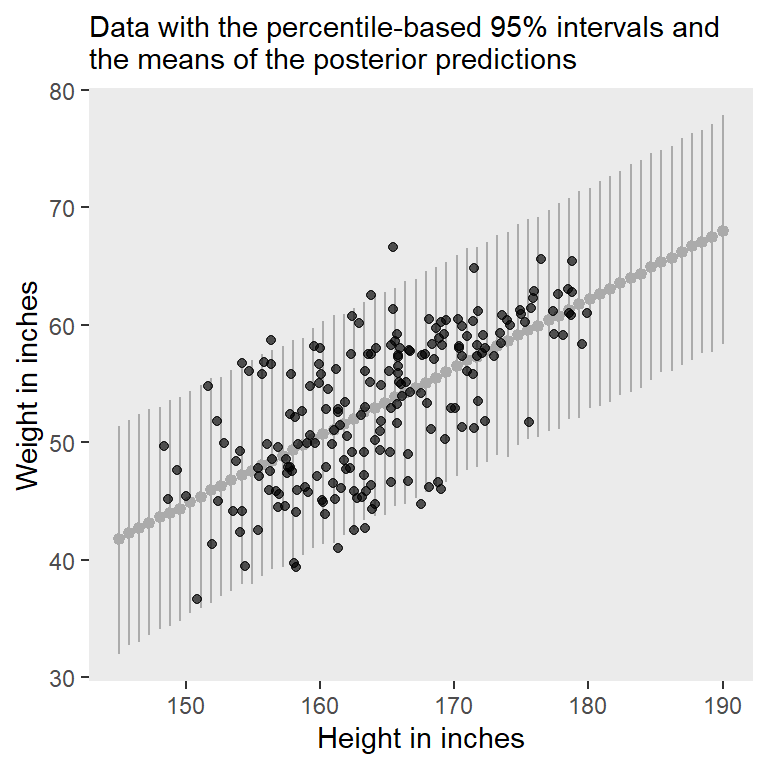
18.2.5 不同种类的宝宝，体重具有显著性差异？
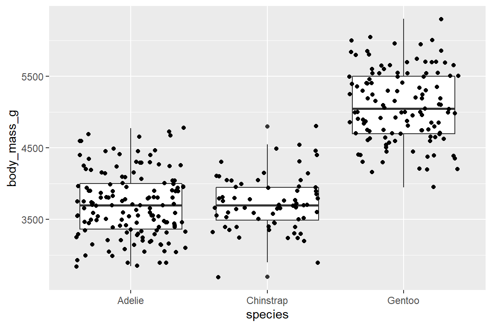
这里推荐可视化学统计的宏包ggstatsplot宏包将统计分析的结果写在图片里，统计结果和图形融合在一起，让统计结果更容易懂了。（使用这个宏包辅助我们学习统计）
penguins %>%
group_by(species) %>%
summarise(
count = n(),
mean_body_mass = mean(body_mass_g),
sd_body_mass = sd(body_mass_g)
)18.2.5.1 参数检验
- one-way ANOVA(要求等方差)
## Df Sum Sq Mean Sq F value Pr(>F)
## species 2 1.45e+08 72595110 342 <2e-16 ***
## Residuals 330 7.01e+07 212332
## ---
## Signif. codes:
## 0 '***' 0.001 '**' 0.01 '*' 0.05 '.' 0.1 ' ' 1- one-way ANOVA(不要求等方差)，相关介绍看here
##
## One-way analysis of means (not assuming equal
## variances)
##
## data: body_mass_g and species
## F = 317, num df = 2, denom df = 188, p-value
## <2e-16stats::aov(formula = body_mass_g ~ species, data = penguins) %>%
TukeyHSD(which = "species") %>%
broom::tidy()library(ggstatsplot)
penguins %>%
ggbetweenstats(
x = species, # > 2 groups
y = body_mass_g,
type = "parametric",
messages = FALSE,
var.equal = FALSE
)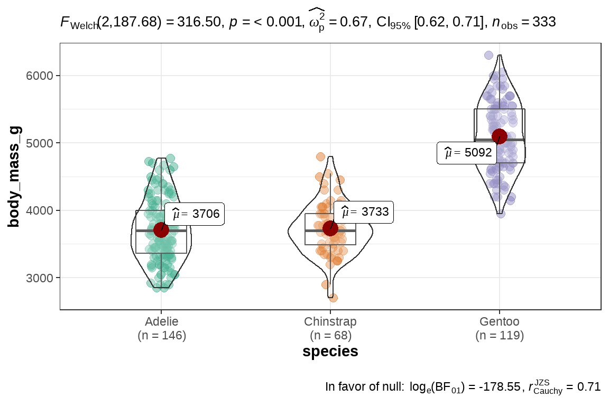
18.2.5.2 非参数检验
相关介绍看here
##
## Kruskal-Wallis rank sum test
##
## data: body_mass_g by species
## Kruskal-Wallis chi-squared = 212, df = 2,
## p-value <2e-16penguins %>%
ggbetweenstats(
x = species,
y = body_mass_g,
type = "nonparametric",
mean.ci = TRUE,
pairwise.comparisons = TRUE, # <<
pairwise.display = "all", # ns = only non-significant
p.adjust.method = "fdr", # <<
messages = FALSE
)
18.2.6 嘴峰长度与嘴峰深度的比例
penguins %>%
mutate(ratio = bill_length_mm / bill_depth_mm) %>%
group_by(species) %>%
summarise(mean = mean(ratio))penguins %>%
mutate(ratio = bill_length_mm / bill_depth_mm) %>%
ggplot(aes(x = ratio, fill = species)) +
ggridges::geom_density_ridges(aes(y = species))
18.2.7 建立模型
scale_fun <- function(x) {
(x - mean(x)) / sd(x)
}
d <- penguins %>%
select(sex, species, bill_length_mm:body_mass_g) %>%
mutate(
across(where(is.numeric), scale_fun)
) %>%
mutate(male = if_else(sex == "male", 1, 0))
d按照species分组后，对flipper_length_mm标准化？这样数据会聚拢到一起了喔, 还是不要了
penguins %>%
select(sex, species, bill_length_mm:body_mass_g) %>%
group_by(species) %>%
mutate(
across(where(is.numeric), scale_fun)
) %>%
ungroup()18.2.7.1 model_01
18.2.7.2 model_02
18.2.7.3 model_03
penguins %>%
group_by(species) %>%
modelr::data_grid(flipper_length_mm) %>%
tidybayes::add_fitted_draws(brms_mod3, n = 100) %>%
ggplot() +
geom_point(
data = penguins,
aes(flipper_length_mm, bill_length_mm, color = species, shape = species)
) +
geom_line(aes(flipper_length_mm, .value, group = interaction(.draw, species), color = species), alpha = 0.1)